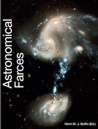

Astronomical Farces

The Astronomical Enquirer
I decided to start a new astronomical journal that would publish only high profile articles that would be fun to read (well, hopefully!).
- On the Use of Astronomy: Predicting the Doom of Humankind, H.M.J. Boffin et al., 1 April 2014
- Do we grasp the physics of binary stars?, H.M.J. Boffin et al., 1 April 2020
- The secret of the elixir of youth of blue straggler stars, H.M.J. Boffin et al., 1 April 2021
- Follow the Index: a new proposal, H.M.J. Boffin et al., 1 April 2022
- When Tails Tell Tales, H.M.J. Boffin, 1 April 2023
You can find some teaching material related to these papers here.
Best Of The Messenger
In the new digital age, one can easily search for things but it becomes very difficult to make serendipitous discoveries, as one would often make when entering a library and glancing through journals and magazines. I had the chance to have - until recently - a full collection of the Messenger, the ESO journal. I was rather surprised and very amused to see that in the first issues, until the late 1970’s, the editor, Dr. Richard West, did not hesitate to introduce very funny pieces – including cartoons – as well as rather interesting general purposes articles. You can find hereby my personal selection (most of which also appear in my book on astronomical farces - see above), but now that all the Messengers have been digitised, don’t hesitate to have a look at their page (http://www.eso.org/sci/publications/messenger/). Hopefully, we will see again such kind of articles in future issues of The Messenger.
- Cosmic Riddle
- Dinner at La Silla
- Cartoons